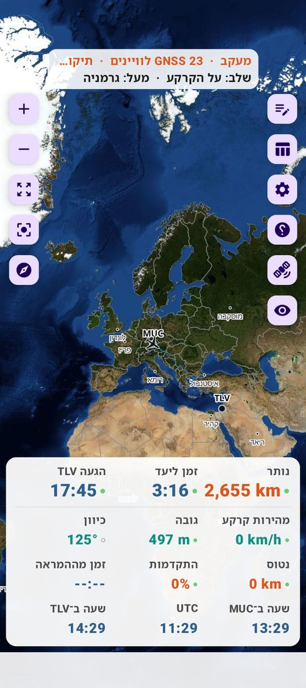
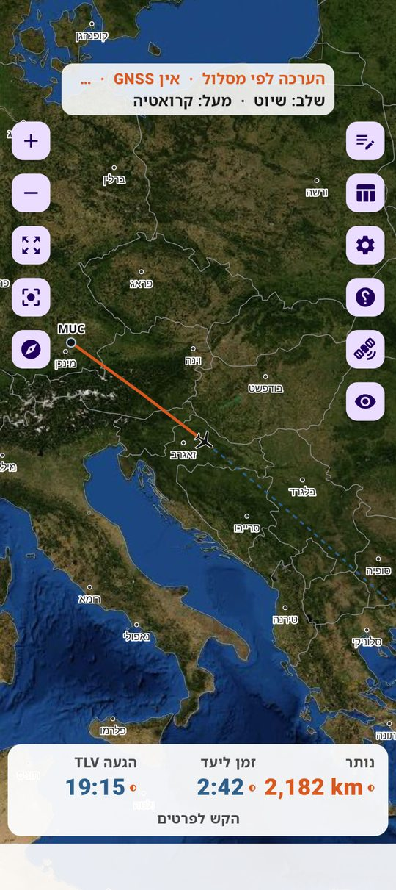
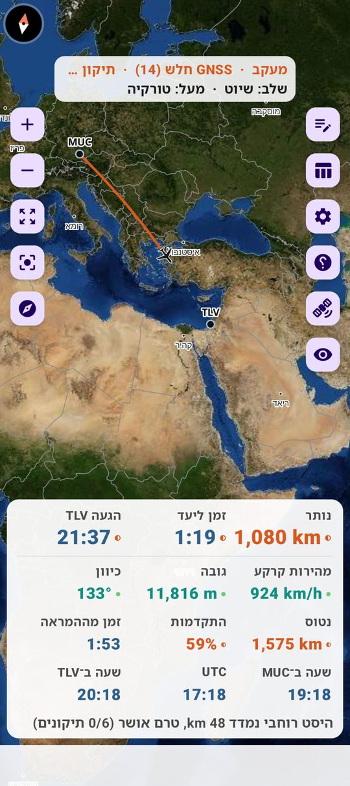
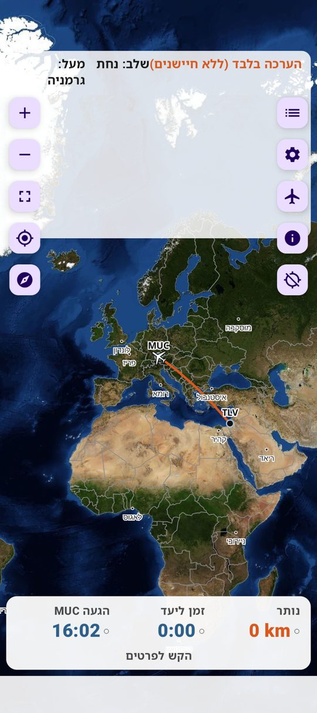
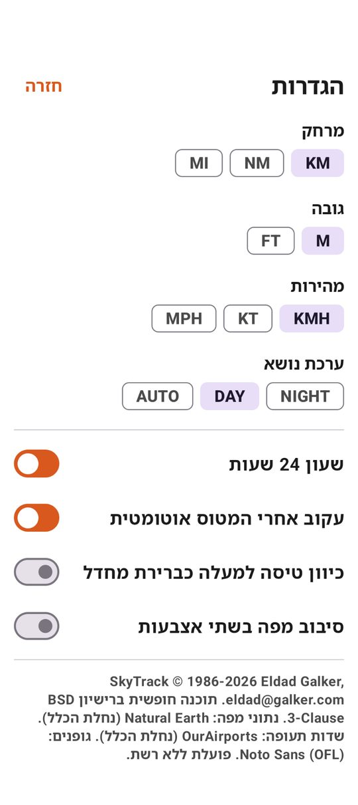

FlightInfo
מיקום המטוס במהלך הטיסה על מפה לא־מקוונת — ללא רשת, ללא חשבון, ללא שרתים. Android בלבד. תוכנה חופשית (BSD 3-Clause).
סרוק את ה־QR בטלפון או לחץ על הכפתור. תמיד הגרסה האחרונה.
קישור ישיר: https://github.com/eldadgalker-dev/FlightInfo/releases/latest/download/FlightInfo.apk
התקנה — ארבעה צעדים
- פתח את הקישור בטלפון (או סרוק את ה־QR) ואשר את ההורדה.
אם Chrome מציג "Dangerous download blocked": פתח ⋮ ← הורדות, הקש על הקובץ החסום ובחר "Download dangerous file". Chrome מסמן כך כל קובץ APK שאינו מוכר לו מהורדות רבות; הקובץ עצמו לא נמצא פסול. לחלופין: Firefox, או Obtainium שמתקין ישירות מ־GitHub.
- פתח את הקובץ
FlightInfo.apkמההתרעה או מתיקיית "הורדות". - Android יבקש לאפשר התקנת אפליקציות מהדפדפן — אשר. זו בקשה חד־פעמית.
- אם Play Protect מציג חסימה: לחץ "פרטים נוספים" ← "התקן בכל מקרה". ההתרעה מופיעה לכל אפליקציה שמותקנת מחוץ לחנות Play; היא אינה מעידה על בעיה.
עדכונים: באפליקציה — הגדרות ← "עדכון האפליקציה" ← "בדוק אם יש עדכון" ← "הורד והתקן". לחלופין הורד שוב מהקישור למעלה; ההתקנה מחליפה את הקודמת ושומרת את ההגדרות.
שימוש ראשון
- הזן מוצא ויעד (קוד IATA כמו
TLV, או שם עיר באנגלית), או לחץ סרוק כרטיס עלייה וכוון את המצלמה לברקוד. - במטוס: הצמד את הטלפון לחלון. תיקון GPS ראשון — 30–60 שניות. במושב אמצע ייתכן שלא יהיה GPS; האפליקציה תציג "חיזוי בלבד" ותעבוד לפי זמן.
- למעקב אחר טיסה שאינך בה — הפעל הערכה בלבד והזן את שעת היציאה.
- תצלום אוויר (NASA Blue Marble): הגדרות ← "תצלום אוויר" ← הורד (פעם אחת, ~60–80 MB, ב־Wi‑Fi).
- עזרה מלאה: כפתור ? באפליקציה.
קישורים
צילומי מסך





הצילומים מגרסאות בטא מוקדמות; פרטים בממשק משתנים בין גרסאות.
מה האפליקציה עושה
- מפת עולם לא־מקוונת (Natural Earth) עם מדינות, ערים ושדות תעופה — בעברית.
- מרחק שנטוס ונותר, מהירות, גובה, כיוון, זמן ליעד, שעת הגעה בשעון היעד, שעה במוצא וב־UTC.
- המטוס תמיד על המסלול המתוכנן; סטייה מוכחת מתכננת את המסלול מחדש ומצוירת בנפרד.
- כל ערך מסומן: נמדד ● / ממוזג ◐ / חיזוי ○ / לא מעודכן ◌.
- יומן טיסה CSV בטלפון (אופציונלי, לשיפור המנגנון). דבר אינו מועלה לשום מקום.
English: FlightInfo shows your aircraft on an offline map during a flight — no network, no account, no servers. Android only, free software (BSD-3-Clause). Download the APK, open it on the phone (if Chrome says "Dangerous download blocked", open Chrome's Downloads, tap the file and choose "Download dangerous file" — or use Firefox / Obtainium), allow installation from this source, and if Play Protect warns choose "More details → Install anyway". In-app updates: Settings → App update. Documentation: README.